Maze-like slot canyons and towering clay spires formed by millions of years of erosion offer scenic trails and unique geological features.
General Information
Visitor Center: 9am to 4:30pm daily (closed holidays during winter)
Day Use (Non-NV Vehicles): $10 per vehicle
Camping (NV Vehicles): $15 per night
Camping (Non-NV Vehicles): $20 per night
Utility Hookups: Additional $10
Bike In: $2 per bike
How to Get There
From Las Vegas (165 mi): Take I-15 N to US-93 N in Apex; follow US-93 N through Caliente to Cathedral Gorge State Park near Panaca.
Overview
Cathedral Gorge State Park protects a surreal landscape of soft, pale clay that has been eroded into spires, fluted walls and narrow slot-like caves resembling the interior of a cathedral. The formations are the remains of an ancient lake bed that filled the valley millions of years ago, and wind and water have carved them into the badlands visitors see today. Established as one of Nevada's early state parks in the 1930s, the gorge is one of the most distinctive geological landscapes in the state and is a favorite of photographers, hikers and campers. People come to wander through the narrow clay canyons, climb to scenic overlooks and enjoy the dark night skies of eastern Nevada.
Access
Cathedral Gorge is in Lincoln County in remote eastern Nevada, just north of the small town of Panaca along US-93, about 165 miles north of Las Vegas. Nearly all visitors arrive by car, either by driving the long but scenic I-15 and US-93 route from Las Vegas or by approaching from the north on US-93 through Ely and Pioche. The park entrance and main roads are paved and easy to follow, and there are no public transportation options. Services in the area are limited, so it is wise to fill up on gas and bring food and water.
Seasons
The park is open year-round and each season offers a different experience. Spring and fall are the most comfortable times for hiking, with mild temperatures and clear skies. Summers are hot and dry, so early morning and evening are best for walking among the formations. Winters are cold and can bring snow, which gives the clay formations a striking look but can make roads and trails muddy and slick. Rain can turn the clay into a slippery mess, so visit after dry weather when possible, and note that the visitor center may be closed on holidays during winter.
Things to Do
Explore Nevada's Most Distinctive Clay Badlands
Cathedral Gorge State Park is a compact landscape of spires, towers and fluted walls sculpted from ancient lake bed clay. Short trails and a scenic park road make it easy to experience the formations up close in just a few hours.
Wander Through the Slot Canyons and Caves
The Cathedral Caves and Moon Caves areas have narrow, twisting passages that lead into small chambers carved into the clay. These short walks are especially fun for families and photographers who enjoy exploring tight spaces and dramatic lighting.
Climb to Miller Point Overlook
A short trail leads to Miller Point, which offers sweeping views of the gorge, the valley and the surrounding mountains. It is an excellent location for sunrise and sunset photography.
Look Up at the Night Sky
Cathedral Gorge's remote location and low light pollution make it a fine stargazing destination. Clear nights reveal the Milky Way over the pale clay spires.
Camp and Picnic in the Gorge
A campground and day-use picnic area sit near the formations, so visitors can enjoy the gorge at different times of day and spend a night under the stars.
Top Trails
Juniper Draw Loop Trail
Length: Approximately 4 miles loop
Elevation Gain: Minimal to Moderate
Difficulty: Easy to Moderate
This scenic loop provides excellent views of Cathedral Gorge's distinctive formations while passing through desert vegetation, open valleys and colorful clay landscapes. It is one of the park's most popular hiking routes.
Miller Point Trail
Length: Approximately 1 mile round trip
Elevation Gain: Minimal
Difficulty: Easy
A short trail leads to one of the park's best viewpoints. Visitors enjoy panoramic views of the gorge, surrounding valleys and the erosion-formed spires that define the landscape.
Cathedral Caves Trail
Length: Approximately 0.5 miles round trip
Elevation Gain: Minimal
Difficulty: Easy
This family-friendly route allows visitors to explore narrow passages and cave-like openings carved into the soft clay formations. It provides an up-close look at the park's most iconic geological features.
Moon Caves Trail
Length: Approximately 1 mile round trip
Elevation Gain: Minimal
Difficulty: Easy
The Moon Caves area features a maze of small slot canyons and eroded chambers. Visitors can wander through twisting passages while appreciating the erosional processes that shaped the landscape.
Visitor Centers
The Cathedral Gorge visitor center is located near the park's main day-use area and is the best first stop. It has exhibits about the geology, history and wildlife of the gorge, a small selection of books and souvenirs, restrooms and rangers who can provide trail maps and current conditions. The center is open daily during standard hours but can close on some holidays in winter, so check the Nevada State Parks website before you go.
Camping and Lodging
Cathedral Gorge has a campground with sites for tents and RVs, some with utility hookups, as well as picnic areas and restrooms, and the park does not have lodging. The nearest services are in Panaca, just a few minutes south, and Caliente and Pioche, which have small motels, historic inns and basic restaurants within about 30 minutes. Mesquite, about 90 minutes to the south, has several casino resorts and chain hotels, and Ely, about 1.5 hours north, also has hotels and restaurants. Las Vegas offers the widest range of lodging but is about 2.5 hours away. Lodging in the area is limited, so book ahead, and check each property's website for current availability.
This article uses material from the Wikipedia article and official pages for Cathedral Gorge State Park, Nevada State Parks: Cathedral Gorge, Travel Nevada, Bureau of Land Management Nevada, released under the Creative Commons Attribution-Share-Alike License 3.0.
Featured Trail

Inklein, CC BY-SA 3.0, via Wikimedia Commons; Image Size Adjusted

Cathedral Gorge Caves Trail
Difficulty: Easy
Short exploratory route through narrow slot canyons and cave-like formations with twisting passages and unique rock textures
Inklein, CC BY-SA 3.0, via Wikimedia Commons; Image Size Adjusted
Juniper Draw Loop Trail
Difficulty: Easy
Scenic loop trail winding through desert terrain and dramatic eroded formations with access to overlooks and canyon features
Inklein, CC BY-SA 3.0, via Wikimedia Commons; Image Size Adjusted
Miller Point Trail
Difficulty: Easy
Short climb featuring a staircase ascent to a panoramic overlook with sweeping views of canyon spires and formations
Inklein, CC BY-SA 3.0, via Wikimedia Commons; Image Size Adjusted
Nature Loop Trail
Difficulty: Easy
Family-friendly interpretive loop with signs highlighting desert plants, wildlife, and geology among unique rock formations


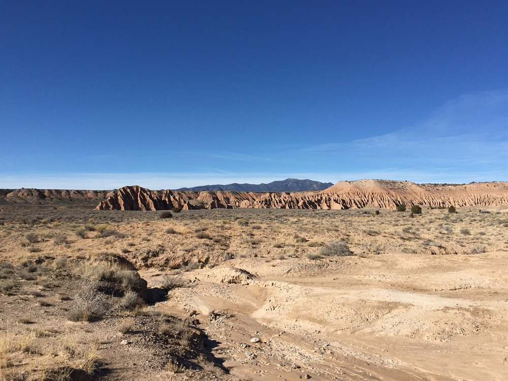

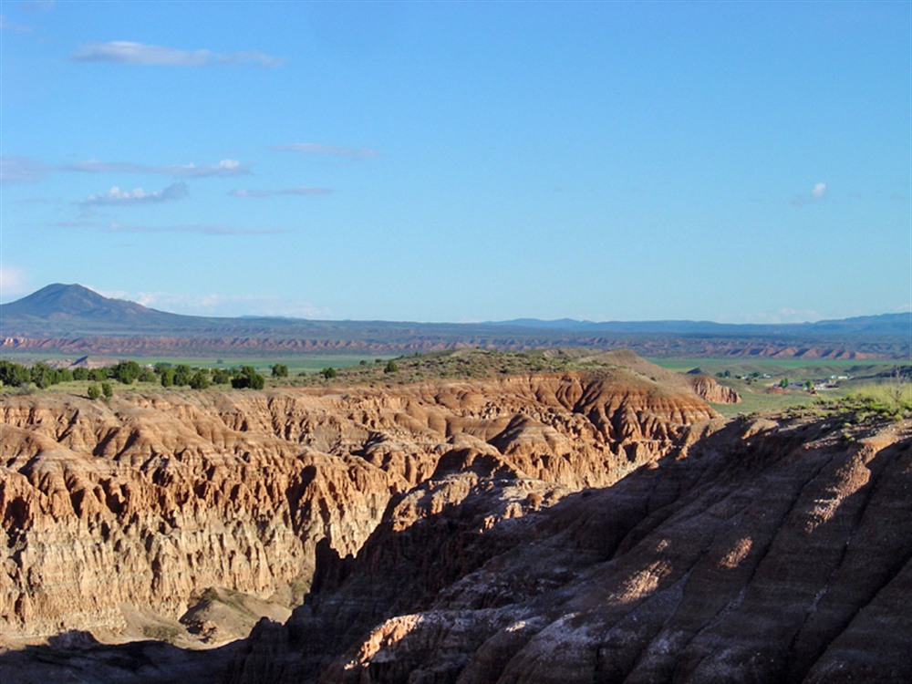

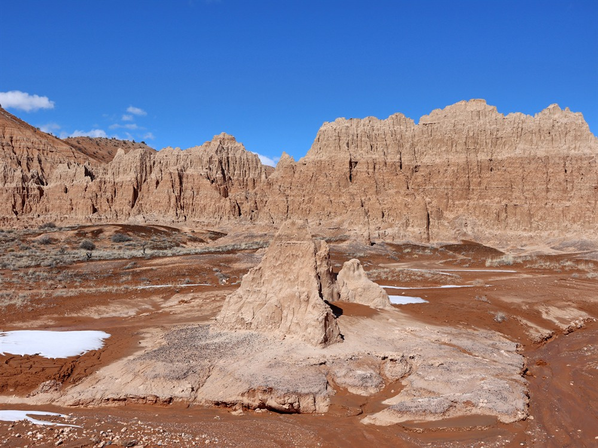

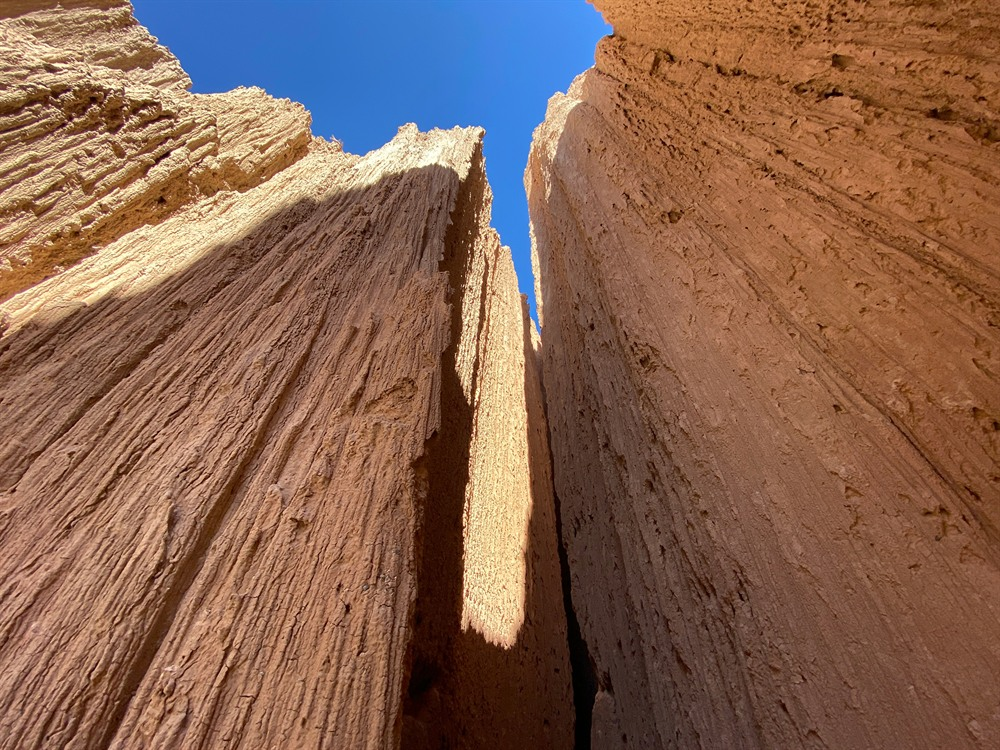

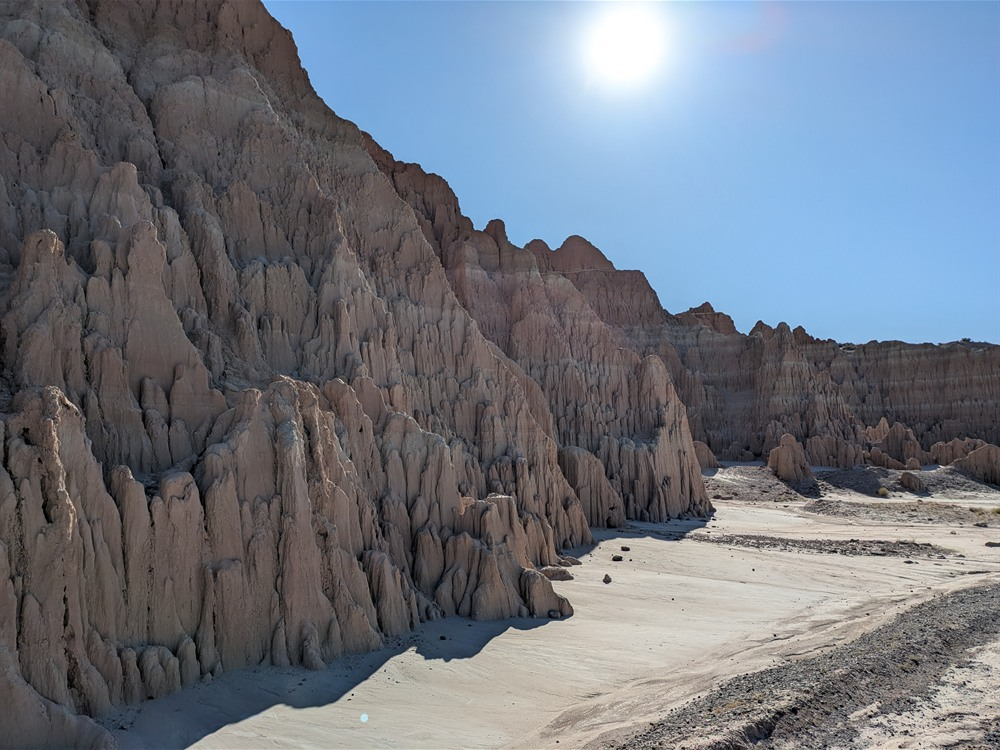

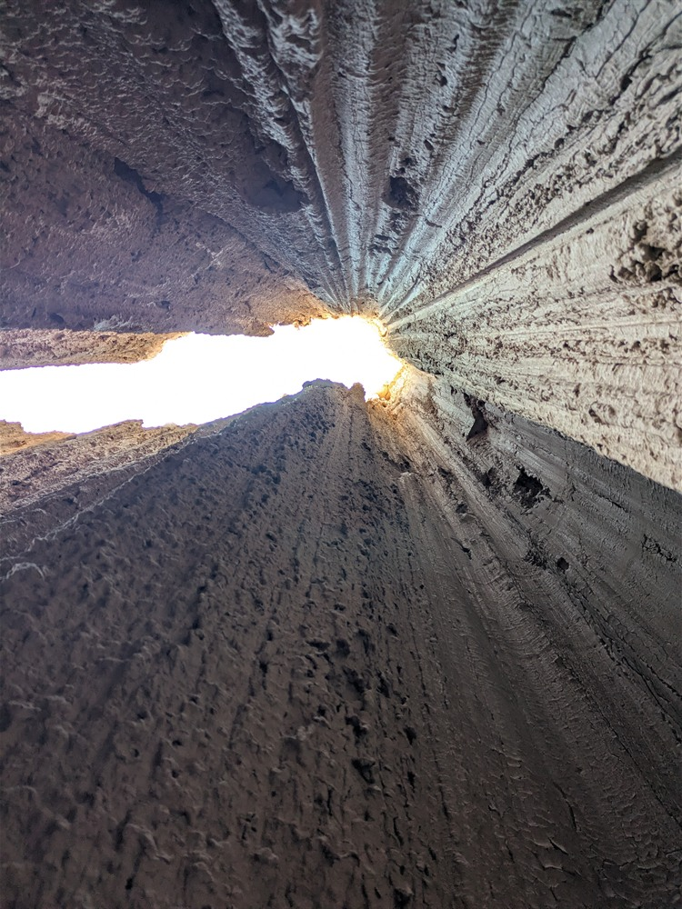

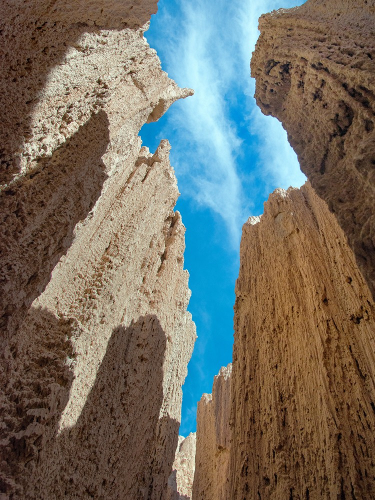
.jpg){kind=link}
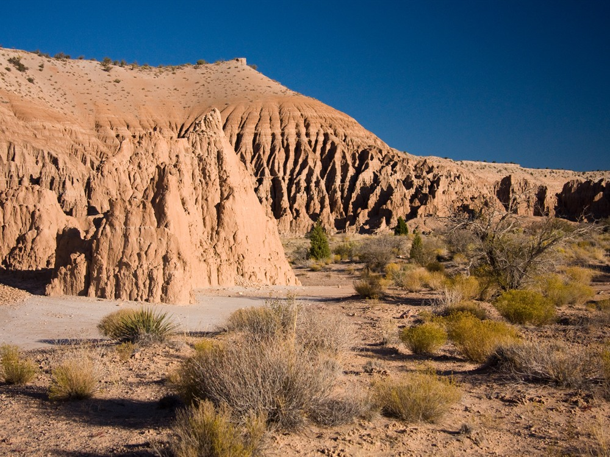
.jpg){kind=link}
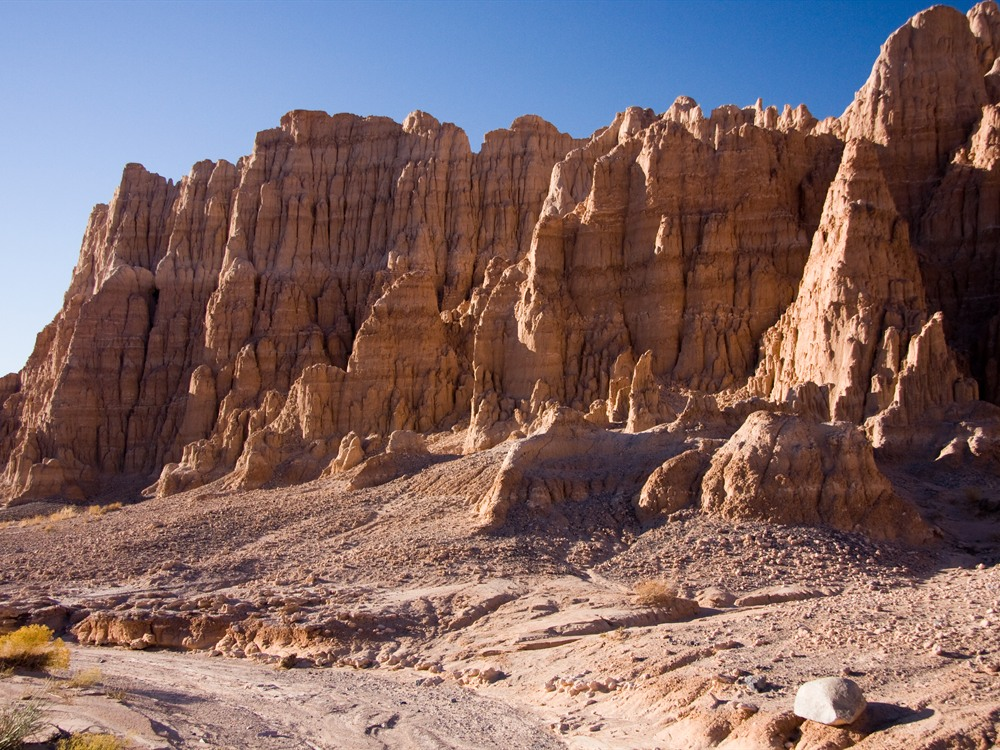
.jpg){kind=link}
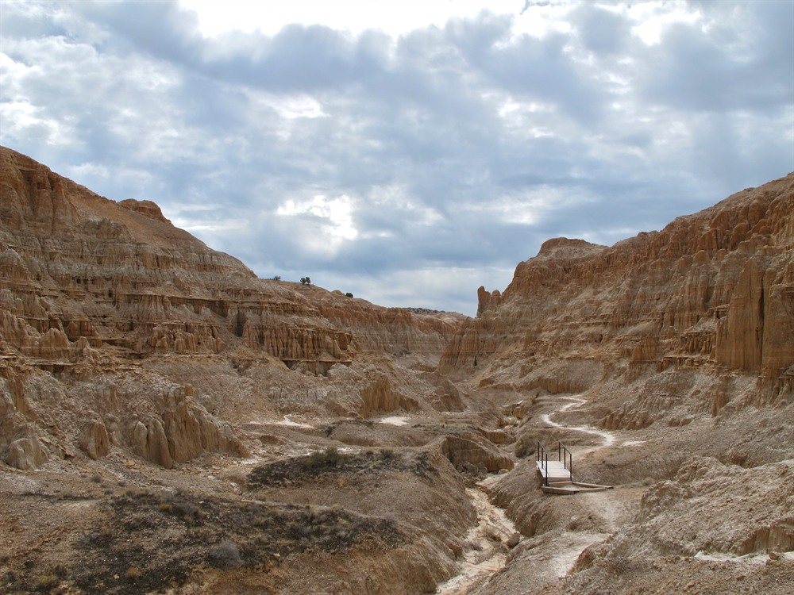

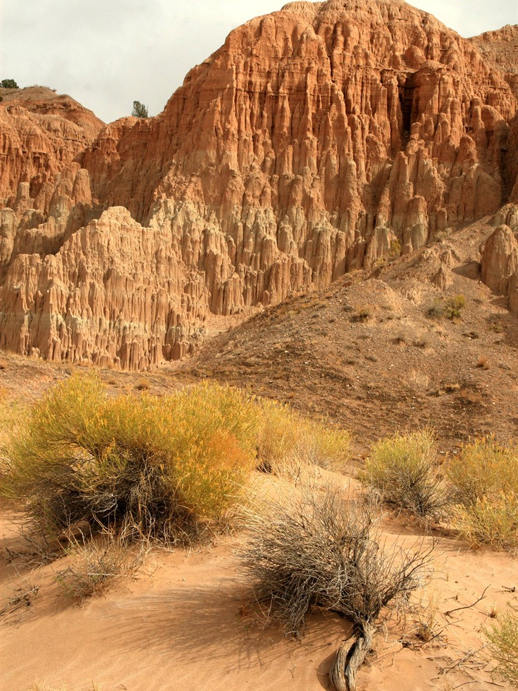
.jpg){kind=link}